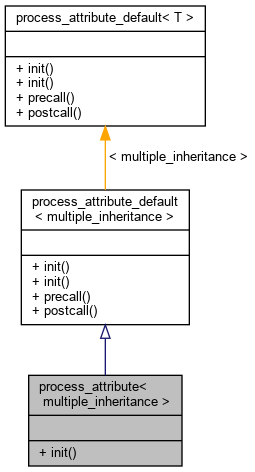

Process a multiple inheritance attribute. More...
#include <attr.h>
Inheritance diagram for process_attribute< multiple_inheritance >:

Collaboration diagram for process_attribute< multiple_inheritance >:
Static Public Member Functions | |
| static void | init (const multiple_inheritance &, type_record *r) |
 Static Public Member Functions inherited from process_attribute_default< multiple_inheritance > Static Public Member Functions inherited from process_attribute_default< multiple_inheritance > | |
| static void | init (const multiple_inheritance &, function_record *) |
| Default implementation: do nothing. More... | |
| static void | init (const multiple_inheritance &, type_record *) |
| static void | precall (function_call &) |
| static void | postcall (function_call &, handle) |
Detailed Description
template<>
struct process_attribute< multiple_inheritance >
Process a multiple inheritance attribute.
Member Function Documentation
◆ init()
|
inlinestatic |
The documentation for this struct was generated from the following file:
- /home/graduate/wuh20/github/AnalogsEnsemble/CGrid/pybind11/include/pybind11/attr.h